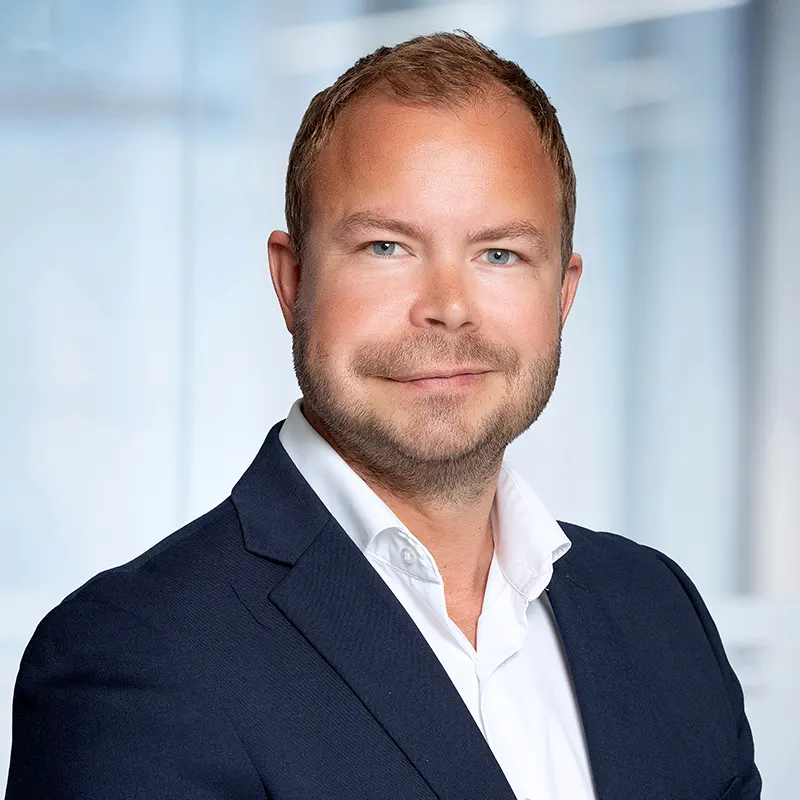
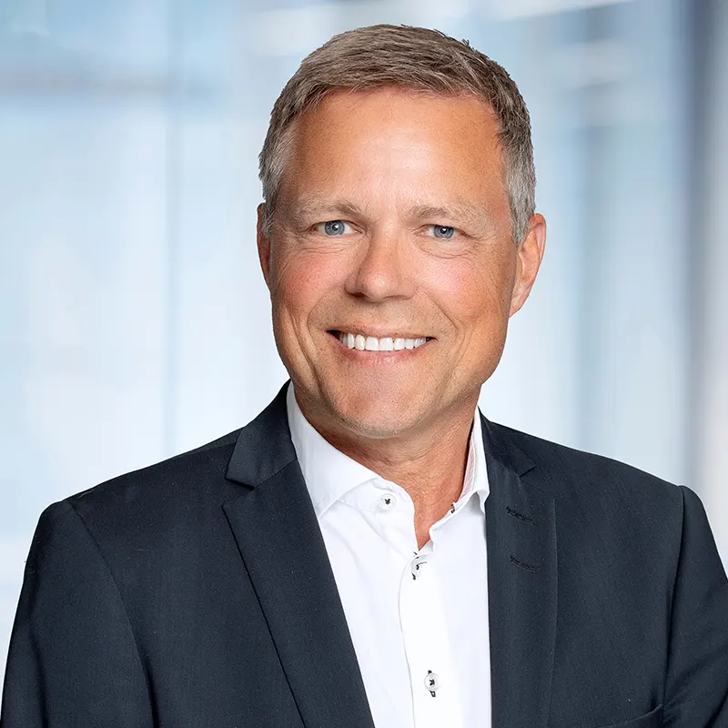
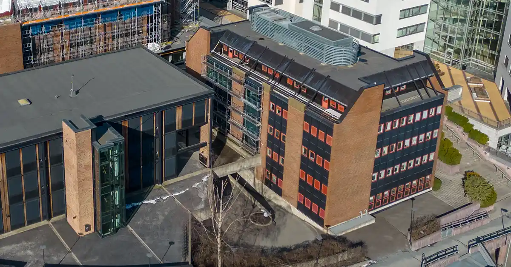

Ni advokater på Lysaker — saken din havner hos den som kan fagfeltet
Du trenger ikke vite om du har en sak. Det er det den innledende samtalen er til for.
Legg igjen navn og nummer, så kontakter vi deg. Du forplikter deg ikke til noe ved å ta en innledende samtale.
Jo tidligere en advokat ser saken, jo flere muligheter har du. Vi sier fra om vi kan hjelpe, og hva vi mener du bør gjøre.
Samlivsbrudd, arv og nabokonflikter er følelsesladede situasjoner som kan gjøre det vanskelig å ta rasjonelle beslutninger. Vi kjenner lovverket og navigerer for deg.
Ni advokater med hvert sitt fagfelt: fast eiendom, familie og arv, arbeidsrett og næringsliv. Saken din havner hos den som kan feltet, med 20 års juridisk erfaring i ryggen.
Er du usikker på om en advokat kan være til hjelp i situasjonen du står i? Gi oss en innføring i saken og fortell hva du tenker selv, så sier vi fra om vi kan hjelpe.
Be om innledende samtaleTar 30 sekunderVil du heller ringe? 67 11 11 70.
Vi hjelper privatpersoner og små og mellomstore bedrifter med fast eiendom, familie og arv, arbeidsrett og næringsliv.
Skjulte feil og mangler etter boligkjøp, eiendomsgrenser, naborett, husleie, plan- og byggesaker og tomtefeste. God kjennskap til lokale forhold i Bærum. Espen Kolflaath: fast eiendom, forbrukerrett og tvisteløsning.
Økonomisk oppgjør etter skilsmisse eller samlivsbrudd, fast bosted og samvær for barna, testament, skifte og forskudd på arv. Kari Sandvand har jobbet med barnerett og økonomisk oppgjør siden 1997.

Oppsigelse, sluttavtale, nedbemanning og permittering, for både arbeidstaker og arbeidsgiver. Kontrakter, selskapsrett og konkurs for bedriften. Tor Kristian Plahte: forretningsjuss, selskapsrett og fast eiendom.
Vi bistår også med varemerke og patent, merverdiavgift og skatt, personvern (GDPR), generasjonsskifte og fremtidsfullmakt.
Tre tilbakemeldinger fra klienter, slik de står på fbadvokat.no.
«Oppleves som profesjonelle da de er løsningsorienterte og lytter til kunden samt som gir en god veiledning. Advokaten forsto min situasjon og satte opp ulike scenarier som ble forklart på en enkel og hensiktmessig måte. Disse vet hva de gjør. Anbefales på det sterkeste.»
«Løsningsorienterte og profesjonelle. Følte meg trygg og ivaretatt. Advokaten satte seg godt inn i saken. Hyggelig og god kommunikasjon. Anbefales på det sterkeste.»
«Løsningsorienterte og oppleves som tvers igjennom profesjonelle. Anbefales på det sterkeste.»
Frøy ble etablert i Bærum i 2011 og holder til på Lysaker torg, med kort vei til klienter i Asker, Bærum og Oslo. Kontoret på Technopolis Fornebu er betjent etter avtale.

En uforpliktende samtale der du belyser saken din for en advokat. Du forteller kort hva det gjelder og hva du tenker selv, så sier vi fra om vi kan hjelpe, og hva vi mener neste steg bør være. Skjemaet hjelper oss å forstå målene og utfordringene dine før vi ringer.
Ja. Det er nettopp det den innledende samtalen er til for: å finne ut om du i det hele tatt har en sak, og om en advokat kan være til hjelp i situasjonen du står i. Kontakt en advokat så tidlig som mulig i prosessen.
Fast eiendom (skjulte feil og mangler, naborett, husleie, eiendomsgrenser, plan- og byggesaker, tomtefeste), familie og arv (økonomisk oppgjør, barnerett, testament, skifte, fremtidsfullmakt), arbeidsrett (oppsigelse, sluttavtaler, nedbemanning, permittering) og forretningsjuss (kontrakter, selskapsrett, konkurs, immaterialrett, skatt og mva).
Vi svarer innen kort tid. Legg igjen navn og nummer i skjemaet, så kontakter vi deg. Haster det, ring 67 11 11 70.
I Lysaker torg 4, på Lysakerlokket, med kort avstand til Asker, Bærum og Oslo. Vi har også kontor på Technopolis Fornebu (Martin Linges vei 25), som er betjent etter avtale.
Ja. Vi bistår små og mellomstore bedrifter med kontrakter, immaterialrett, skatt, arbeidsrett, tvister og transaksjoner, og gir løpende støtte til HR-avdelinger i arbeidsrettslige spørsmål.
Kontoret ligger i Lysaker torg 4, et sentralt knutepunkt med kort avstand til klienter i Asker, Bærum og Oslo. Kjører du bil, finner du oss på Lysakerlokket.
